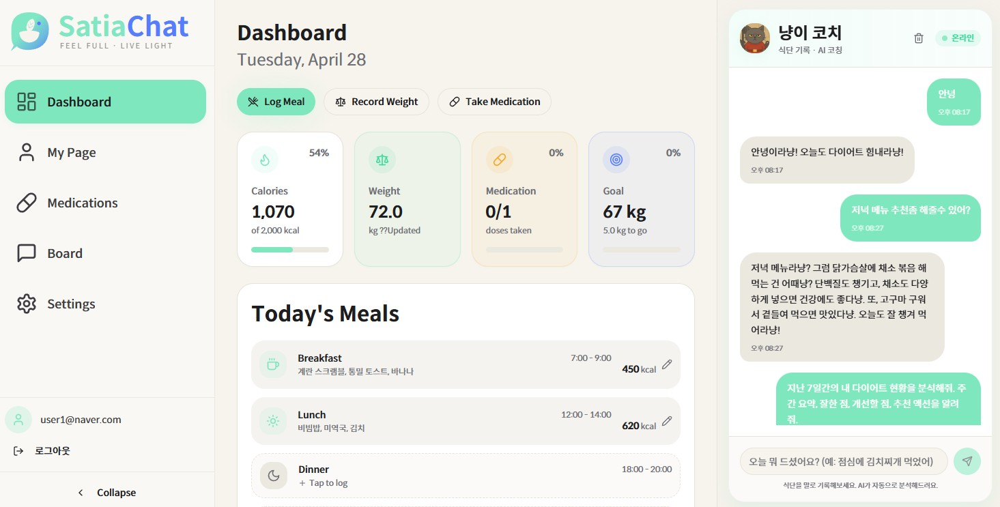
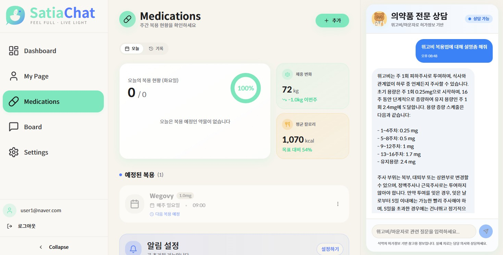
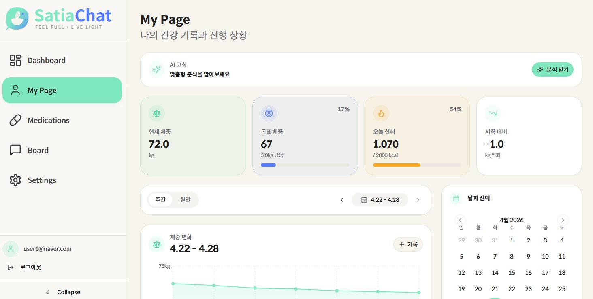
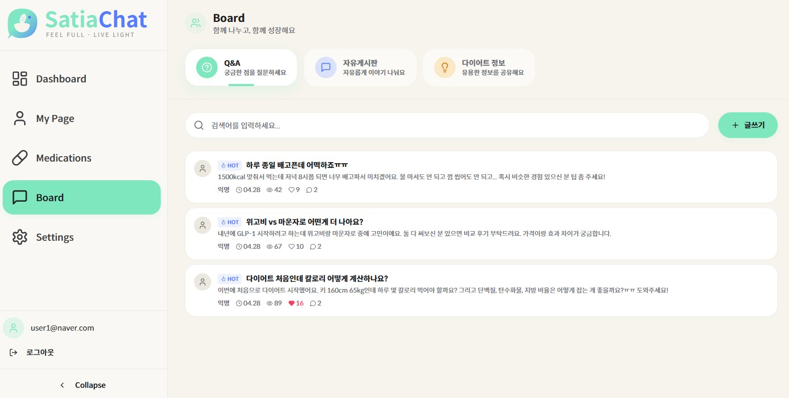

SatiaChat
AI 다이어트 코치 + GLP-1 약물 RAG 상담 서비스. 위고비·마운자로 사용자가 부작용·복약 시점을 즉시 확인할 수 있도록 식약처 공식 허가사항을 RAG로 검색하고, 식단·체중·복약 기록을 컨텍스트로 한 AI 코치(페르소나 3종)를 함께 제공합니다.
01Overview
"다이어트 약을 처방받았는데, 매번 의사에게 물어볼 수도 없고…" 를 해결하는 서비스입니다. 위고비·마운자로 같은 GLP-1 다이어트 약 사용자가 부작용이나 복약 시점을 즉시 확인하기 어렵다는 점에서 출발했습니다.
SatiaChat은 식약처 공식 허가사항을 RAG로 검색해 답변하는 약물 챗봇과, 사용자의 식단·체중·복약 기록을 컨텍스트로 사용하는 AI 다이어트 코치(캐릭터 페르소나 3종)를 함께 제공합니다.

02Architecture
// Request path Client ──▶ React (Vite, :8080) │ shadcn/ui · Tailwind · TanStack Query │ ▼ API ──▶ FastAPI 메인 서버 (:8000) │ JWT 검증 미들웨어 · 의도 분류 ├──▶ /chat (식단 챗봇) ├──▶ /summary (오늘/주/월 집계) └──▶ /medication (RAG 프록시) │ ├──▶ OpenAI GPT-4o-mini (LLM · Function Calling) │ ▼ RAG ──▶ medication-rag (:8001) │ LlamaIndex · bge-m3 임베딩 │ 위고비 / 마운자로 허가사항 인덱스 │ ▼ DB ──▶ Supabase (Auth · PostgreSQL) RLS · 한식 영양 DB
| Layer | Stack | Notes |
|---|---|---|
| Backend | Python · FastAPI | 메인 서버 + RAG 서버 분리 (8000/8001) |
| RAG | LlamaIndex · bge-m3 | 식약처 허가사항 벡터 인덱싱. |
| DB | Supabase (Postgres) | Auth · 식단/체중/복약 · RLS. |
| Frontend | React · TypeScript · Vite | shadcn/ui · Tailwind · TanStack Query. |
| External | OpenAI · 식약처 nedrug | GPT-4o-mini · 약물 허가사항 다운로드. |
03Features



- AI 페르소나 코치
- 3종 캐릭터(냥이 — 쿨/팩트, 댕댕이 — 따뜻/응원, 꿀꿀이 — 엄격/직설)의 어미·이모지·톤이 시스템 프롬프트에 일관 적용되어 사용자 retention을 강화합니다.
- 자연어 식단 자동 기록
- "치킨 먹었어" 한 마디로 OpenAI Function Calling이 음식·칼로리·매크로를 추출해 DB에 INSERT 합니다. 6가지 의도(log/query/stats/modify/analyze/chat)를 사전 분류해 비용·지연을 최적화했습니다.
- GLP-1 약물 RAG 상담
- 식약처 공식 허가사항(위고비·마운자로) 6개 문서를 LlamaIndex로 인덱싱. bge-m3 다국어 임베딩으로 한국어 질의에 대해 top-4 청크 검색 후 GPT-4o-mini가 출처와 함께 답변합니다.
- 대시보드
- 오늘 칼로리, 체중 변화, 복약 여부를 일·주·월 단위로 집계해 보여줍니다. 위고비·마운자로처럼 주 1회 복용하는 약은 지정한 요일에만 알림이 표시됩니다.
- AI 주간 인사이트
- "분석 받기"를 누르면 코치가 최근 7일치 식단·체중·복약 데이터를 종합 분석해 맞춤 조언 리포트를 생성합니다.
- 커뮤니티 게시판
- QnA · 자유 · 정보 3개 탭의 게시판이며, 좋아요/싫어요와 댓글 기능을 제공합니다.
04Responsibilities
- · AI 챗봇 시스템 (식단 코치) — 6가지 의도 AI 분류, 의도별 프롬프트 빌더, cold/bright/strict 페르소나 시스템 프롬프트, OpenAI Function Calling 도구 4종(log/get/update/delete).
- · 약물 RAG 시스템 — 식약처 의약품안전나라(nedrug) 허가사항 문서 다운로드/텍스트 변환, LlamaIndex 벡터 인덱스 구축, bge-m3 임베딩 적용.
- · 데이터 집계 / 인사이트 — 일·주·월 칼로리/체중/복약 집계 엔드포인트, 복약 순응률 계산(주 단위 약 종류별 가중치), AI 주간 인사이트(7일치 종합 분석).
- · API · 인증 — FastAPI 라우터(chat / medication / summary), Supabase JWT(HS256) 검증 미들웨어, 에러 핸들링 / API 응답 표준화 / 로깅.
- · 프론트엔드 / UX — 11개 페이지(대시보드 · MyPage · 약 관리 · 커뮤니티 · 설정 등), 온보딩 5단계 + 페르소나 선택, 챗 패널(모바일 플로팅 + 데스크탑 사이드바), 주간/월간 차트·캘린더.
05Troubleshooting
상황. 하나의 챗봇 호출 안에 키워드 매칭, 상황 감지, 페르소나 응답 로직이 모두 포함되어 있어 매 요청마다 토큰 사용량이 많았습니다. 키워드 패턴 기반 의도 분류 코드가 800줄을 넘어 유지보수도 어려웠습니다.
원인. 의도 분류, 상황 감지, 페르소나 응답이 한 함수 안에 묶여 있어 사용자가 단순 인사를 보내도 식단 컨텍스트와 페르소나 분기가 모두 실행되었습니다. 의도가 추가될 때마다 키워드 패턴을 늘려야 해서 코드가 계속 커졌습니다.
해결. 두 단계로 분리했습니다. 1단계는 AI가
의도(log/query/modify/analyze/chat)를
약 100토큰으로 분류하고, 2단계는 분류된 의도에 맞는 프롬프트 파일만
호출하도록 했습니다. 결과적으로 챗봇 관련 코드량이 절반 가까이
줄었고, 호출 한 번당 토큰 사용량도 큰 폭으로 감소했습니다(의도별
프롬프트만 보내므로).
상황. 약물 RAG 챗봇은 사용자의 모든 질문에 대해 벡터 검색을 실행했습니다. "안녕" 같은 인사나 "이번 주 복용률 알려줘" 같은 통계 질문에도 RAG가 호출되어 임베딩·벡터 검색 비용이 불필요하게 발생했습니다.
원인. RAG API의 use_rag
옵션이 항상 true로 고정되어 있었고,
클라이언트에서 의도에 따라 분기를 걸 수단이 없었습니다. 약 정보가
필요한 질문과 그렇지 않은 질문이 동일하게 처리되었습니다.
해결. 식단 챗봇과 동일한 2단계 구조를 적용했습니다.
4가지 의도(medication_info / analysis / stats / chat) 중
약 정보가 필요한 medication_info와
analysis에서만 RAG를 호출하고,
stats와 chat은
RAG 없이 DB 쿼리/일반 응답으로 처리했습니다. 클라이언트가
use_rag 파라미터로 직접 토글할 수 있도록
RAG API도 수정했습니다.
06Tech stack
| Layer | Tools |
|---|---|
| Backend | Python · FastAPI · LlamaIndex · Supabase |
| Frontend | React · TypeScript · Vite |
| External APIs | OpenAI · 식약처 nedrug API |